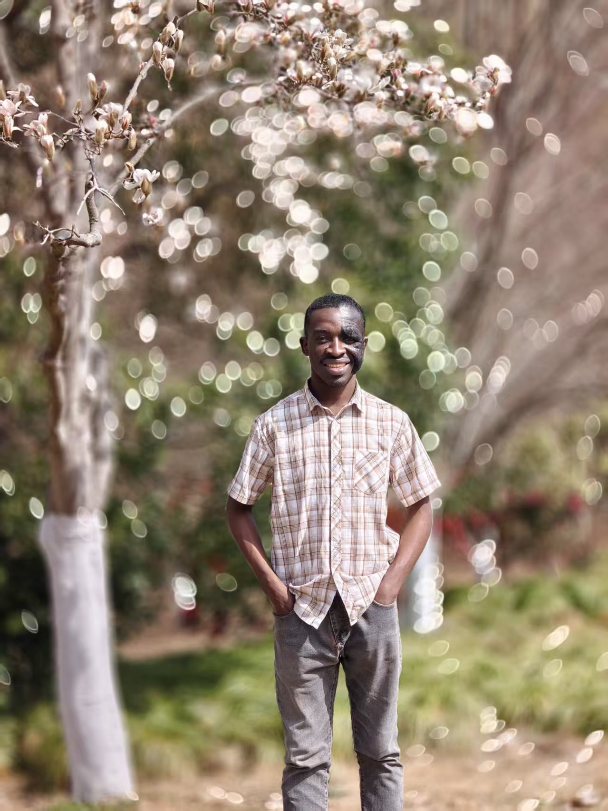

M.S. Student in Software Engineering (AI/ML)
University of Science and Technology of China (USTC)
I am a Master's student at the University of Science and Technology of China (USTC), focusing on intelligent systems that combine retrieval, reasoning, and adaptive memory. My current work centers on personalized agentic RAG systems with autonomous decision-making and self-correction loops.
I am also deeply interested in reinforcement learning for LLM agents, long-tailed recognition, and sharpness-aware minimization (SAM) methods for imbalanced datasets. I enjoy building end-to-end systems and open-sourcing my work when possible.